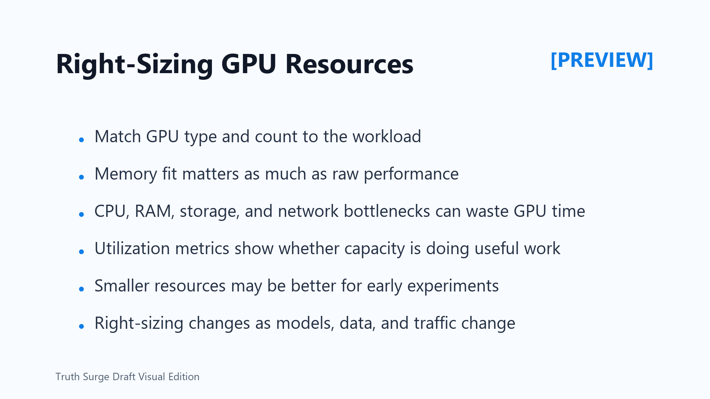

Right-Sizing GPU Resources
Connecting to LMS... Progress: in progress

Narration
Right-sizing means matching the resource to the workload instead of starting from the largest familiar option. GPU type, GPU count, accelerator memory, CPU, system memory, local storage, remote storage throughput, and network capacity all affect whether a job runs efficiently.
Memory fit is often as important as raw accelerator performance. If the model, batch, or dataset pipeline does not fit, the job may fail or require a different configuration. If the GPU is powerful but waits on CPU preprocessing, slow storage, or network transfer, the expensive part of the system is not doing useful work.
Utilization metrics help teams see what is happening. GPU utilization, memory usage, queue wait time, job duration, failure rate, and data loading behavior can show whether the workload is compute-bound, memory-bound, input-bound, or simply oversized.
For early experiments, smaller or fewer GPUs may be enough. A team can test code paths, validate data, confirm configuration, and estimate scaling behavior before moving to larger capacity. That pattern reduces failed large jobs and makes learning cheaper.
Right-sizing is not a one-time choice. Models, datasets, batch sizes, traffic patterns, runtime libraries, and business needs change. A resource that was a good match last month may be wasteful or insufficient later. Regular review keeps the allocation connected to reality.
A useful right-sizing practice records the reason for the choice. If a job needs a larger GPU because of memory, write that down. If it needs more CPU because preprocessing is heavy, record that too. Future maintainers can then revisit the decision with evidence instead of guessing.